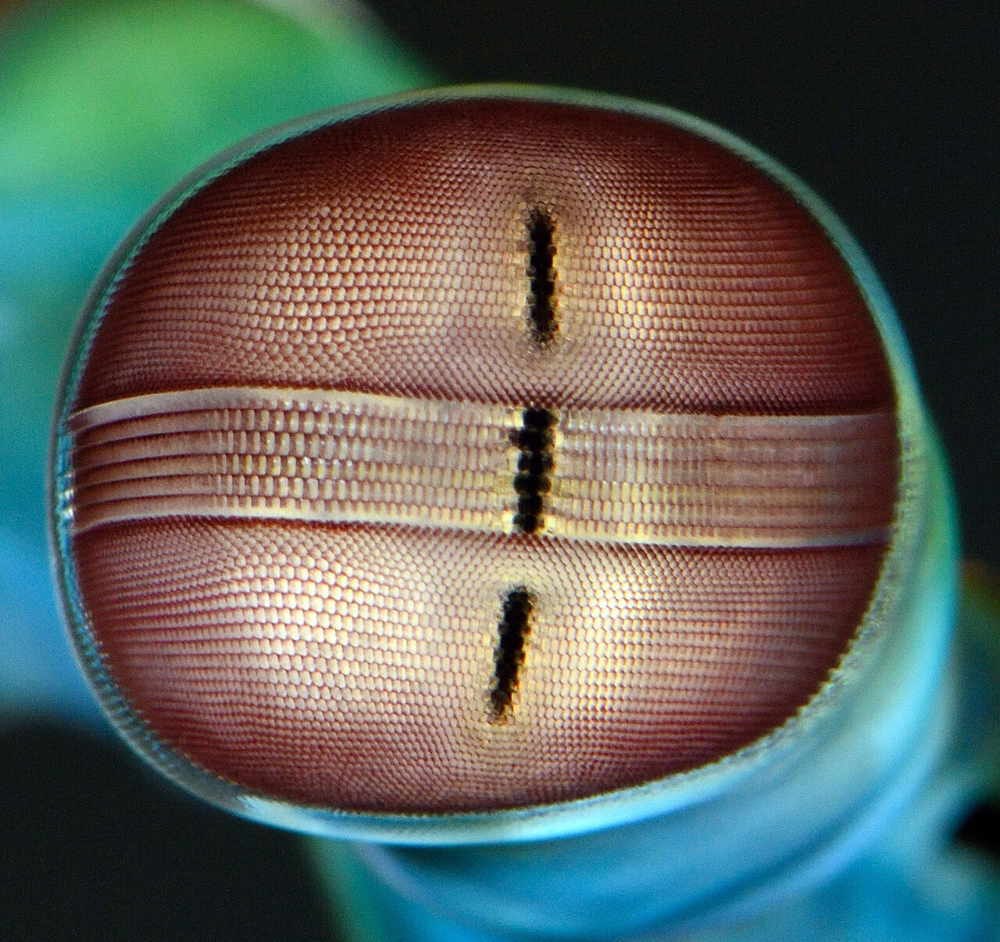

Fatos sobre o Stomatopoda
Informações gerais
Odontodactylus scyllarus
| Reino: | Animalia |
| Filo: | Arthropoda |
| Subfilo: | Crustacea |
| Classe: | Malacostraca |
| Subclasse: | Hoplocarida |
| Ordem: | Stomatopoda |
Muitas Cores!
Estomatópodes possuem um sistema visual incrivelmente complexo, com olhos compostos que enxergam 12 cores primárias, correspondentes aos 12 pigmentos distintos presentes em sua retina. São mais tipos de fotoreceptores do que qualquer outro animal conhecido!
Lagosta boxeadora
São animais exclusivamente carnívoros, alimentando-se de camarões, caranguejos, moluscos, peixes e até mesmo outros da mesma ordem.
O segundo par de patas, muito desenvolvido, é usado tanto para atacar a presa como para se defender. Elas podem acelerar na mesma velocidade de um projétil de rifle calibre .22, e em menos de três milésimos de segundo atingir sua presa com incríveis 1500 Newtons de força.